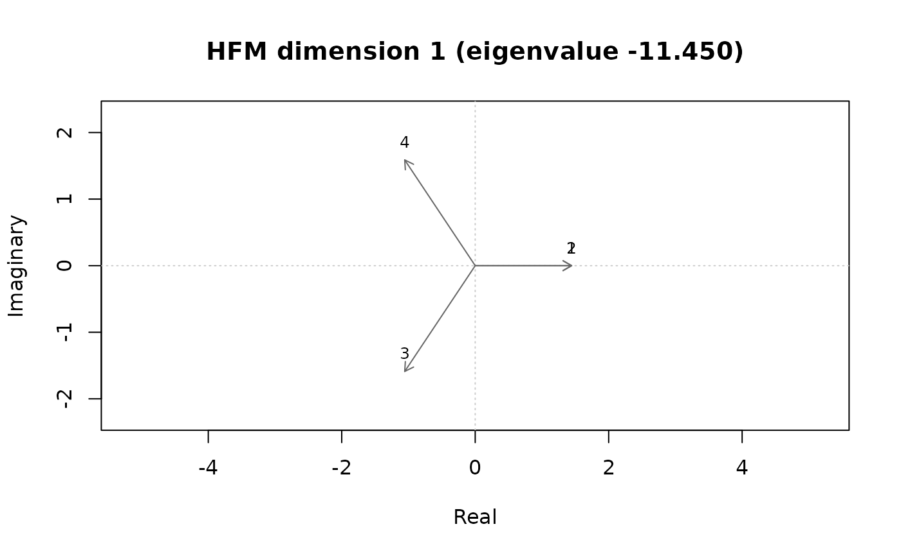

The square matrix X is split into its symmetric part S and its
skew-symmetric part K, and the Hermitian matrix H = S + iK is
eigen-decomposed: H = U diag(lambda) U*. The eigenvalues are real and are
ordered by absolute value. Each dimension is a complex plane; object j is
the point z_j = u_j * sqrt(|lambda|). For a dimension with a positive
eigenvalue, Re(z_j Conj(z_k)) reproduces the symmetric part and
Im(z_j Conj(z_k)) the skew-symmetric part, so the angle from k to j
(counterclockwise) shows the direction of asymmetry.
Usage
hfm_mds(x, ndim = 2, rotate = c("std", "varimax", "none"))Value
An object of class c("mdspace_hfm", "mdspace") with
coord (n x ndim complex matrix), conf (n x 2*ndim real matrix: real and
imaginary parts of each dimension), eigen (all eigenvalues), gof
(lambda^2 / sum(lambda^2) for each dimension), unexplained (share of
the sum of squares of H not reproduced by the kept dimensions, i.e.
1 - cumulative GOF), and hermitian (H). HFM is not a distance model,
so stress is NA.
Details
An eigenvector is determined only up to a factor exp(i * theta), i.e. a
rotation of its complex plane. rotate = "std" (default) turns each plane
so that the principal axis of the points lies on the real axis (the sum of
squared real parts is maximal). rotate = "varimax" turns each plane so
that the variance of Re(z^2) over objects is maximal, which pushes the
points toward the real and imaginary axes. Both follow the 2001 Visual Basic
program (rotateSTD and rotateMAX). In both cases the plane is then
flipped, if needed, so that the object with the largest absolute real part
lies on the positive side.
References
Chino, N., & Shiraiwa, K. (1993). Geometrical structures of some non-distance models for asymmetric MDS. Behaviormetrika, 20(1), 35-47.
Examples
x <- matrix(c(0, 1, 1, 7, 1, 0, 1, 7, 7, 7, 0, 1, 1, 1, 7, 0), 4, byrow = TRUE)
fit <- hfm_mds(x, ndim = 2)
fit
#> mdspace: hfm
#> Call: hfm_mds(x = x, ndim = 2)
#> Objects: 4 Dimensions: 2
#> Unexplained SS (1 - cumulative GOF): 0.0144
#>
#> D1 D2
#> eigenvalue -11.4501 10.8290
#> gof 0.5203 0.4653
#> cumulative 0.5203 0.9856
#> Note: negative eigenvalues reverse the reading of angles in those planes.
plot(fit, dim = 1)
